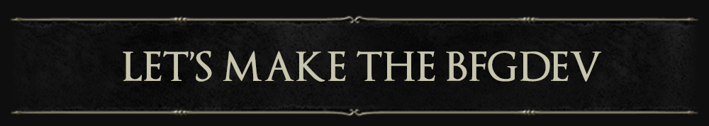
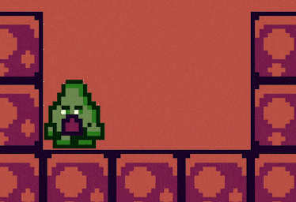

Hulvdan

Ahh, well met, Ashen One 👋
As a programmer, I'm looking to participate in game jams with teams of like-minded people. My goal is to start making games commercially once I've met the field's inspiring individuals and gained more experience.
Even though I started to program a way earlier, commercially speaking, I have been programming for 3.5+ years as a Python backend developer (HTTP, websockets, Nginx, PostgreSQL, admin panels, a bit of payments, a bit of hosting and configuration, Docker, CI/CD).
My contacts:
- Discord: hulvdan
In terms of GameDev, I worked on:
- A game in a team for Metroidvania 21 game jam - The Clocktower Letter
- Isometric Minecraft
- Angry Birds
- Top-down tank
- Sea Battle with multiplayer
- Pong, Tetris, Chess, Sokoban, Arcanoid, Labyrinths, 2048, etc...
- Scripts: lots of macroses, a bit of memory manipulation
- A bit more other small prototypes
I worked with:
- Unity, C#
- C++ with cocos2d, entt, box2d, some terminal graphics libraries
- 3D Meshes real-time creation in code
- Shaders - I experimented with 1) shaders written in HLSL and 2) Unity's Shader Graph. I've never touched the rendering pipeline, though
- 2D animations, Timeline
- Unity's InputManager, InputSystem
- Behavior Trees (Behavior Designer)
- Tilemaps
- Texture atlases (Texture Packer, Free texture packer)
- Music and sounds (a bit of Wwise, FMOD)
Some highlights of my personal projects:

Various studies applied to a platformer game in Unity, C# - https://github.com/Hulvdan/Avocado